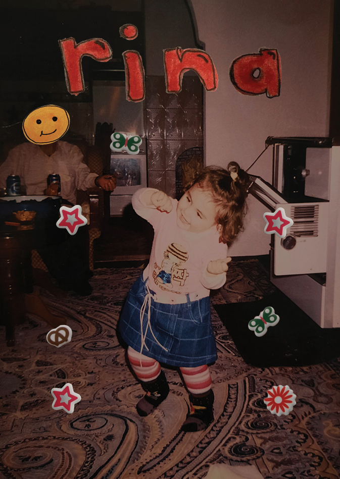
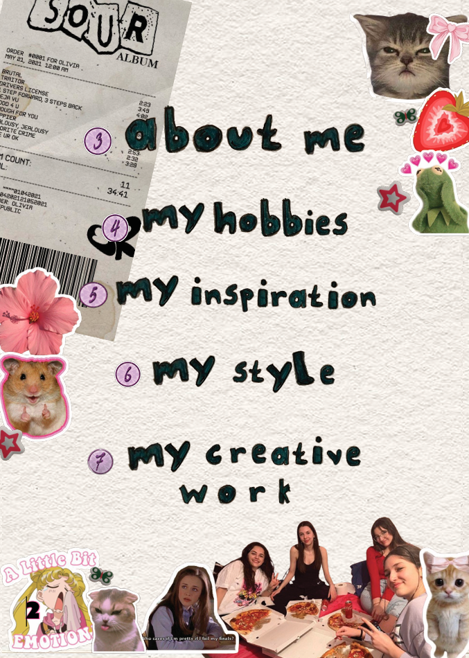

This magazine is a great representation of who I am and showcases my playful approach to design. It was created as part of a class assignment, where I combined my ideas and personal style to craft a unique and engaging visual experience.
Used software: InDesign

